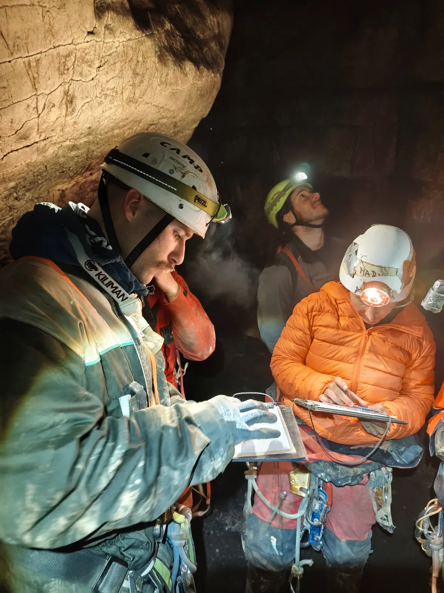

Spust u jamu
I konačno je stigao dan da se spustimo u jamu, donekle, ili barem u špilju s jamskim ulazom, Jopićevu špilju, dovoljno blizu da budemo sretni.

Autor: Matija Hrženjak
Fotografije: Jelena Babić, Klara Krstičević, Matija Hrženjak
I konačno je stigao dan da se spustimo u jamu, donekle, ili barem u špilju s jamskim ulazom, Jopićevu špilju, dovoljno blizu da budemo sretni. Tri nova iskustva su obilježila ovaj naš treći izlet speleološke školice: gubljenje u špilji i izvan nje kako bi se zatim mogli orijentirati i naći pravi put, izrada minimalističkog bivka (pokoji megalomanskih razmjera) za sigurno spavanje te crtanje nacrta špilje kako se sljedeći puta ne bi morali više gubiti u njoj.
Subota nam je krenula lagano, tegljenjem svih stvari kojima smo se prenatrpali od parkinga pa do kampa malo ispod jamskih ulaza. Moramo naučiti malo bolje (čitaj: lakše) se spakirati. Dok su naši marljivi instruktori postavljali jamske ulaze, Fero nam je održao kratak uvod u bivakiranje, a Marina nam je pomogla sa samom izradom našeg bivka, koji je bio dovoljno divan da se na kraju i sama smjestila u njega. Skupili smo i nešto štapića, štapova i štapetina za logorsku vatru. Ovi zadnji su posebno obradovali Tonija koji se odmah ulovio motorne pile.
Nakon ručka podijelili smo se u dvije skupine od kojih se jedna izgubila u jamu, a druga izvan nje. Čedo nas je naučio kako se snaći i orijentirati izvan špilje koristeći karte, kompase i što kad ih nemamo pri ruci. Marina nas je naučila kako crtati nacrt špilje, što sve moramo navest na njemu i kako koristiti digitalne uređaje za mjerenje te kako se snaći kada ne žele surađivati. Iznimno me iznenadilo kako smo u mraku, vlazi i blatu još uvijek u mogućnosti lijepo i precizno crtati po izbrušenom milimetarskom papiru. Moj nadraži dio ovog izleta. Našli smo se zajedno natrag tek u sumrak, lijepo najeli u mnoštvu domaće kuhinje koja je bila prisutna za velebitaškim stolom i još se umjereno zabavili Ninovom svirkom i pjesmom grijući se uz vatru do ranih jutarnjih prikladnog vremena za spavanje tako da smo svi odmorni i spremni za sljedeći dan.
Nedjelja je krenula polako, nekima i blago hladno, ali neprekinuto kuhanje kave je zagrijalo i najsmrznutije. Krenuli smo opet spuštanjem u špilju i zatim dugim i prekrasnim prohodom kroz vrludave kanale koji se svako malo presijecaju. Bez Dalibora koji nas je vodio, bili bismo totalno i potpuno izgubljeni, posve sigurno. Mnoštvo penjanja, spuštanja, istezanja, saginjanja i ponešto provlačenja je učinilo naš put još zabavnijim. Veselim se i saznati ponešto više o posebnim penjačkim tehnikama u speleologiji (više od jednog slajda sljedeći put, molit ću lijepo). Naučili smo i posebno voljeti koraloidne tipove siga jer nam ukazuju na strujanje zraka i vjerojatnost pronalaska novih prolaza.
Poslije izlaska smo se ponovno podijelili u dvije skupine. Jedna je odradila orijentaciju u prirodi, a druga je vježbala spuštanje i penjanje po užetu. Nakon toga je došao najtužniji dio svakog našeg izleta, raspremanje, pakiranje i povratak kući.